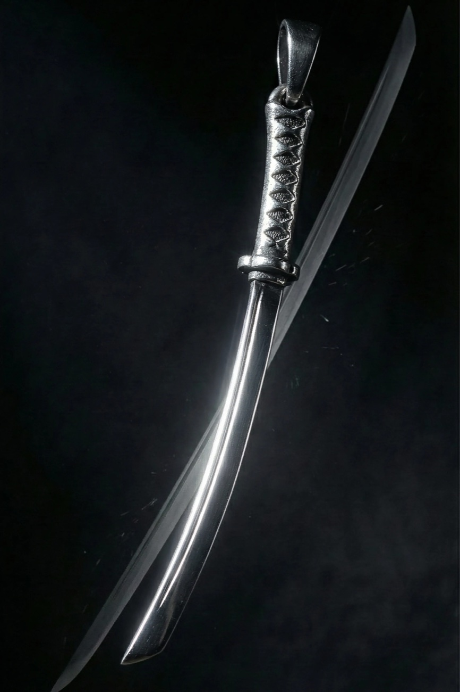
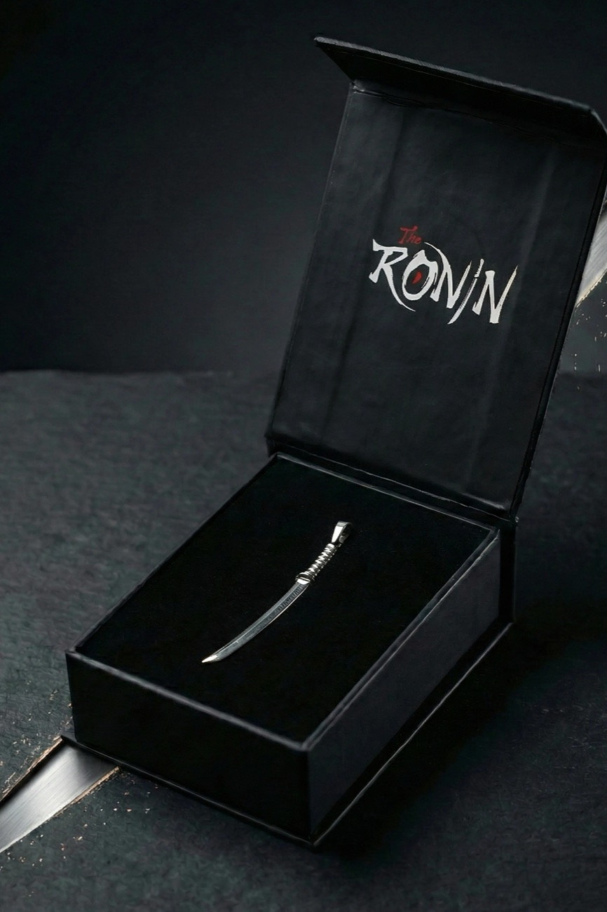

SABAH RİTÜELİ
A complete AI-produced campaign for BUSHIDO — a persistent two-character cast, a rebuilt 4K product catalog, three finished films and custom music. Every frame on this page was generated, directed and finished by me. No stock, no photography, no borrowed footage.
THREE FILMS, ONE MORNING
Shot vertically for social. Mastered in 4K at 24fps. Custom instrumental score on each film; the men's film carries a Turkish voice-over.
HER RITUAL
The Yağ Dengesi face bar — water, lather, skin. Bright, playful, clean.
HIS RITUAL
Bushido Nord beard oil — slow-motion drops, a night-grey bathroom, a Turkish voice-over.
THE RITUAL, TOGETHER
The couple reel — both rituals cut into one morning.
TWO PEOPLE WHO DO NOT EXIST
Before a single scene, I built the humans. Ayla and Kaan are fully synthetic, persistent characters — each locked with a base identity master and multi-view character sheets (face, profile, back, hands, feet). That lock is what lets the same two faces survive across studio shots, bathroom scenes, masks, foam, slow-motion and film after film.


THE CATALOG, REBUILT IN 4K
I took Bushido's official product references and re-photographed them synthetically — clean white studio catalog imagery, faithful to every stitch, engraving and label line. Reference on the left, my studio rebuild on the right.






FRAMES FROM THE FILMS


HOW I BUILT IT
PRODUCT DNA
I started from Bushido's official product imagery and rebuilt every item as clean 4K studio catalog shots — logos, embroidery and label typography preserved line by line, verified at 200% zoom.
CAST SYSTEM
I designed two persistent characters with identity masters and multi-view character sheets, then dressed them exclusively in the rebuilt products. Identity stays locked across every scene, angle and expression.
SCENE SYSTEM
All imagery was generated in node-based flows on Magnific (Business plan) using Google's Nano Banana 2 with multi-reference conditioning — every scene receives the character canon, the product canon and the location canon at once. Two worlds: her bright Mediterranean bathroom, his grey backlit night bathroom.
MOTION
Each selected frame was directed into motion with Kling 3.0 using structured JSON direction — choreographed micro-acting (a wink, a suppressed smile, one oil drop landing in a beard), locked product typography, and camera moves written beat by beat.
FINISH
Every clip passed through licensed Topaz Video AI Pro (full commercial rights): 4K masters, detail recovery tuned by hand, and frame-interpolated slow motion on the fluid shots. Edited, graded and lettered in After Effects.
SOUND
Each film carries its own custom instrumental score, structure-directed to evolve with the cut every few seconds — plus a Turkish voice-over on the men's film. Licensed for commercial use.
The hard part is not making one beautiful image. It is making the two-hundredth frame agree with the first — same faces, same beard tie, same embroidery, same label type. Consistency was the brief I gave myself, and it is the thing this page is really showing.
THIS IS ONE MORNING. IMAGINE A SEASON.
Campaign concepts, product films, persistent brand characters, full social packages — produced end-to-end, fast, with full commercial licensing on every tool in the chain.
eray@eraybalat.comThis page is a private, unlisted preview prepared for the Bushido / rekkitz team. All Bushido trademarks and product designs belong to Bushido.